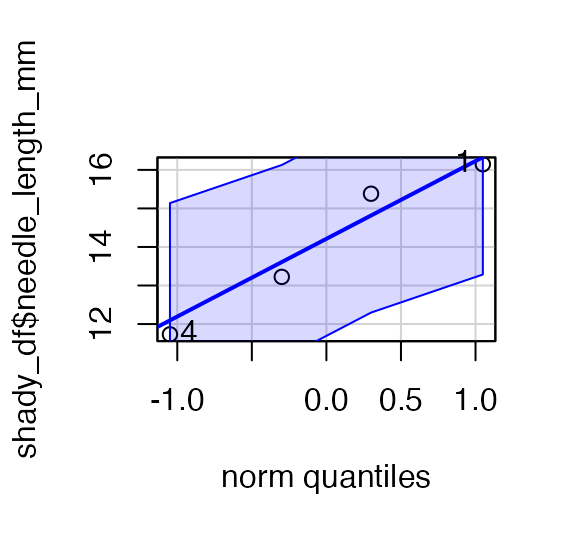

Put the script and a data/ folder holding pine_data.csv in your project, then run the script from top to bottom.
What these tests do
A t-test compares a mean to something: a fixed number (one-sample), another group’s mean (two-sample), or the same unit measured twice (paired). Each one asks whether a difference is bigger than chance would produce.
Test
Question
R call
One-sample
Is the mean different from a number?
t.test(x, mu = 15)
Two-sample
Do two group means differ?
t.test(y ~ group, var.equal = TRUE)
Welch
Same, but variances may differ
t.test(y ~ group, var.equal = FALSE)
Paired
Is the mean difference within pairs zero?
t.test(a, b, paired = TRUE)
Data: pine needle lengths (mm) from the sunny and shady sides of trees, 8 needles per side per tree, one tree per team.
Question: is the mean shady-side needle length different from 15 mm?
\(H_0: \mu = 15\) vs. \(H_A: \mu \neq 15\)
shady_df <- p_df %>%filter(side =="shady")sunny_df <- p_df %>%filter(side =="sunny")# assumption: the shady values are roughly normalqqPlot(shady_df$needle_length_mm)

[1] 4 1
shapiro.test(shady_df$needle_length_mm)
Shapiro-Wilk normality test
data: shady_df$needle_length_mm
W = 0.94326, p-value = 0.6743
one_sample_model <-t.test(shady_df$needle_length_mm, mu =15)one_sample_model
One Sample t-test
data: shady_df$needle_length_mm
t = -0.87183, df = 3, p-value = 0.4475
alternative hypothesis: true mean is not equal to 15
95 percent confidence interval:
10.91210 17.32978
sample estimates:
mean of x
14.12094
For a one-tailed test, add alternative = "less" or "greater":
t.test(shady_df$needle_length_mm, mu =15, alternative ="less")
One Sample t-test
data: shady_df$needle_length_mm
t = -0.87183, df = 3, p-value = 0.2237
alternative hypothesis: true mean is less than 15
95 percent confidence interval:
-Inf 16.49382
sample estimates:
mean of x
14.12094
Step 6: Two-sample t-test
Question: does mean needle length differ between sides?
\(H_0: \mu_{shady} = \mu_{sunny}\) vs. \(H_A: \mu_{shady} \neq \mu_{sunny}\)
Check the assumptions — normality within each group and equal variances:
# A tibble: 2 × 2
side shapiro_p
<chr> <dbl>
1 shady 0.674
2 sunny 0.516
leveneTest(needle_length_mm ~factor(side), data = p_df)
Levene's Test for Homogeneity of Variance (center = median)
Df F value Pr(>F)
group 1 0.6355 0.4557
6
Both p > 0.05 means no evidence against normality or equal variances. With only 4 points per side, these tests have very little power, so look at the plots too.
Two Sample t-test
data: needle_length_mm by side
t = -0.85529, df = 6, p-value = 0.4252
alternative hypothesis: true difference in means between group shady and group sunny is not equal to 0
95 percent confidence interval:
-4.221663 2.034788
sample estimates:
mean in group shady mean in group sunny
14.12094 15.21438
Step 7: Welch’s t-test
Welch’s version does not assume equal variances. It is R’s default (var.equal = FALSE) and is a safe choice whenever Levene’s test or the boxplot suggests unequal spread.
Welch Two Sample t-test
data: needle_length_mm by side
t = -0.85529, df = 5.6627, p-value = 0.4271
alternative hypothesis: true difference in means between group shady and group sunny is not equal to 0
95 percent confidence interval:
-4.267394 2.080519
sample estimates:
mean in group shady mean in group sunny
14.12094 15.21438
Note the fractional df. That is the Welch correction.
Step 8: Paired t-test
Both sides were measured on the same tree, so the right test pairs them. First make one column per side:
Paired t-test
data: p_wide_df$shady and p_wide_df$sunny
t = -2.7227, df = 3, p-value = 0.07238
alternative hypothesis: true mean difference is not equal to 0
95 percent confidence interval:
-2.3714897 0.1846147
sample estimates:
mean difference
-1.093438
A paired t-test is the same as a one-sample t-test on the differences:
diff_df <- p_wide_df %>%mutate(difference = sunny - shady)t.test(diff_df$difference, mu =0)
One Sample t-test
data: diff_df$difference
t = 2.7227, df = 3, p-value = 0.07238
alternative hypothesis: true mean is not equal to 0
95 percent confidence interval:
-0.1846147 2.3714897
sample estimates:
mean of x
1.093438
Step 9: Reading the output
t: the difference divided by its standard error. Bigger |t| means stronger evidence.
df: n − 1 (one-sample, paired), n₁ + n₂ − 2 (two-sample), or a fractional value (Welch).
p-value: the chance of a t this extreme if \(H_0\) were true. Below 0.05, reject \(H_0\).
95% CI: the plausible range for the mean (or difference). If it excludes the null value, p < 0.05.
Pairing removes tree-to-tree variation, so the paired test has a much smaller standard error than the two-sample test on the same numbers. Compare the two p-values.
Step 10: Write it up
Sunny-side needles were on average 1.09 mm longer than shady-side needles, but the difference was not significant (paired t-test: t(3) = -2.72, p = 0.072, n = 4 trees; 95% CI for shady − sunny: -2.37 to 0.18 mm).
Give the test, t, df, p, n, and the size of the effect with its CI. Report means ± SE from Step 3 in a table or figure. With only 4 trees, a non-significant result says little; the CI shows how wide the uncertainty is.